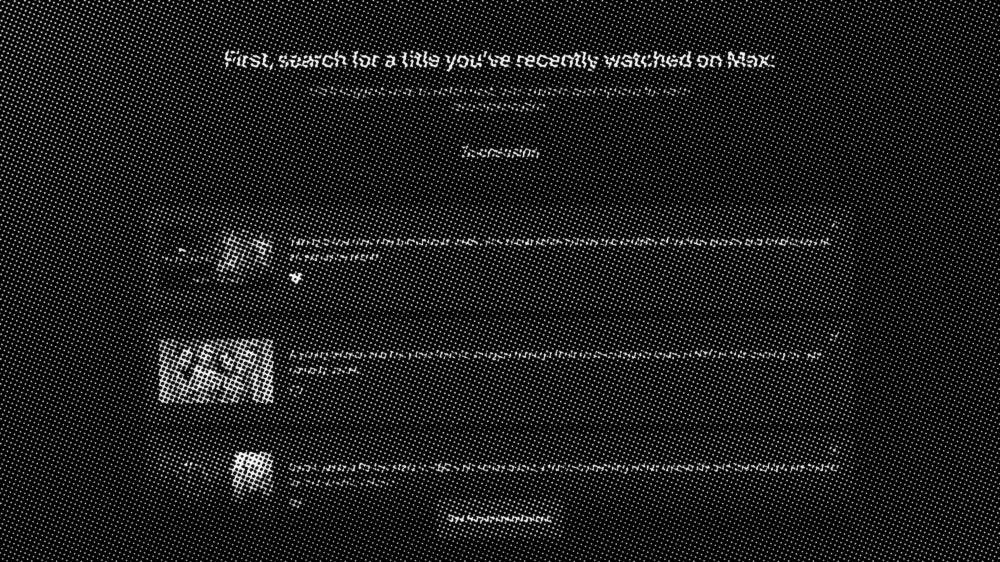
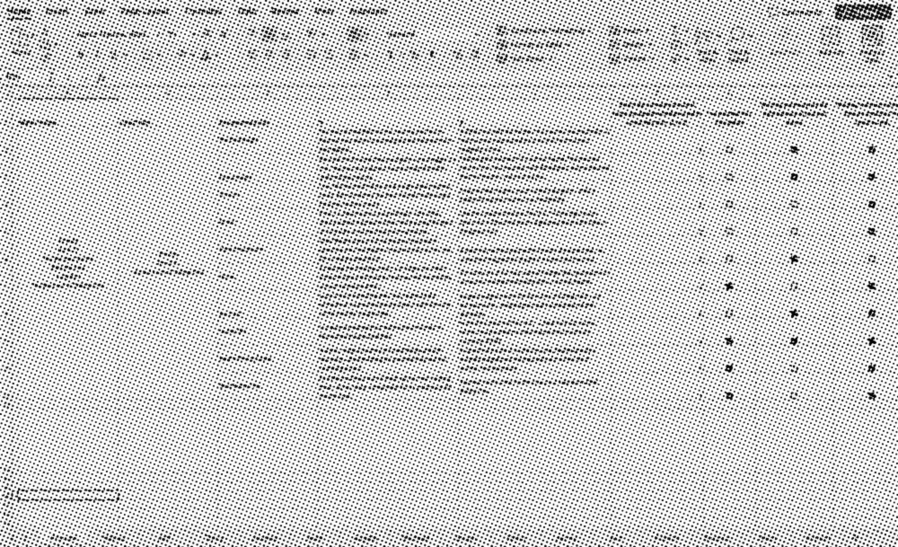

Two signals were available, and they are not interchangeable. Watch history is broad and behavioral — it shows what someone puts on. Explicit likes are narrow and endorsed — they show what someone would defend. The first model I built used history alone, and it name-dropped titles a viewer had merely watched, sometimes titles they had abandoned halfway.
That version tested worse than the generic copy. Not because the writing was weaker, but because a wrong name-drop is louder than no name-drop. It reads as a system claiming to know you and getting it wrong.
So: history infers the pattern, likes earn the reference. A previous title may be named only when the analyst scores the connection above 85 — a specific, defensible link, not "both are dramas."

One reason per segment scales. It cannot explain one person.
Reasons to Watch appears when a viewer focuses on a title. Instead of repeating the synopsis, it argues for the title. Internal research had already shown the pattern helped: it lifted clarity around why something was being recommended by 4%.

The scalable version of that idea assigned every viewer to one of 17 affinity groups and wrote one piece of copy per group. It was practical for cost and for a catalog this size. It also flattened taste. The same person can want a prestige drama, a competitive cooking show and a comfort sitcom in one week, for three completely unrelated reasons.
From Julian Fellowes, this sprawling period drama chronicles the great conflict between old and new in New York's glittering Gilded Age.
A gripping portrayal of wealth, power, and the societal change in old New York through the lens of layered, elite families.
The brief I set myself: write for one viewer rather than their segment, without breaking the 135-character limit, Max's voice, or the spoiler rules.
The first prompts produced accurate plot summaries. They described the title correctly and gave no one a reason to choose it. I reframed the task three times before it landed — each reframing was a real rewrite of the brief, not a wording tweak.
- 135-character summary Read like the synopsis it was meant to replace.
- Recommendation More directional, still too broad to be persuasive.
- Reason they could like it Closer. Still hedged.
- 135-character pitch Chosen. "Pitch" is the only one of the four that implies you have to win someone over.
The threshold is a dial, not a law. Set it lower and the copy references familiar titles constantly and cheapens them; set it higher and it almost never earns one. 85 was where the references stopped feeling automatic in my test set.
A single prompt had to research the title, infer taste, write the copy, enforce the product rules and judge its own work. The output stayed generic and quietly missed specifications, and when it failed there was no way to tell which job had failed.
Splitting the work was not about accuracy. It was about diagnosis. Once each stage returned a structured handoff, a weak sentence had an address: a bad connection is an analysis problem, flat language is a writing problem, a broken character count is an editing problem. Each one gets tuned without disturbing the others.